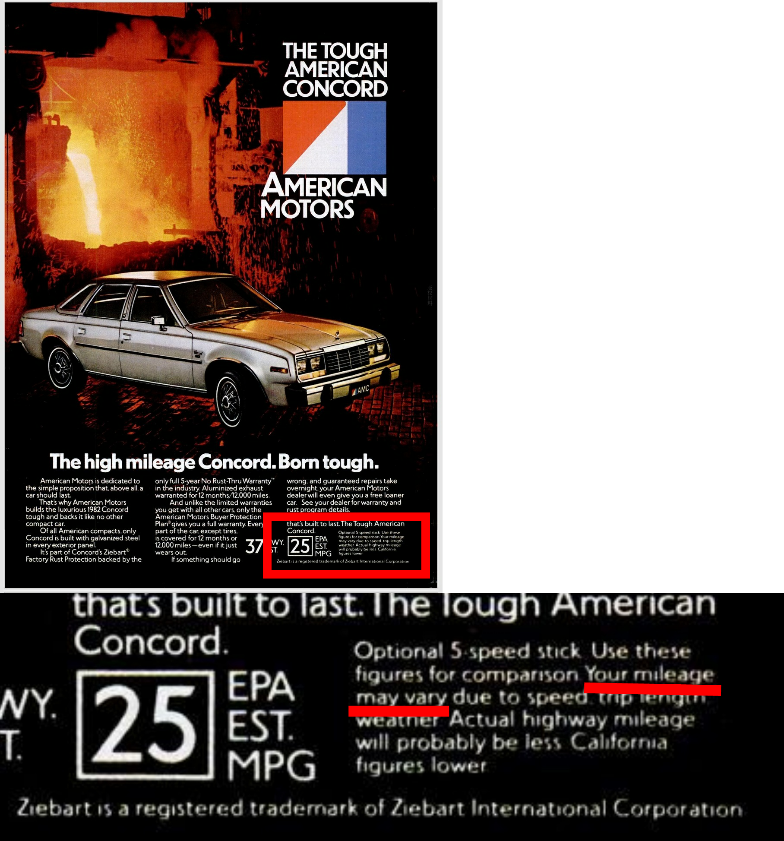

A disclaimer given along with advice, meaning roughly, “It worked for me, but may not work in all cases.” It may work differently in your situation, or be different in your experience.
在给出建议时的免责声明，大意是说，“这种做法对我有用，但可能并不是对任何人都有用.” 在你那边可能情况会有所不同，或者你的体会、经验会有不同.
To express a possible difference in taste, “this is just my opinion, your opinion may be different”.
品味上的不同也可以用，大意是说，“这只是我个人的观点，你的观点可能会不同.”
美国国家环境保护局（The United States Environmental Protection Agency）在汽车排放的条例中要求所有的汽车必须经历一系列的排放检测，检测是通过模拟城市中和高速上的行车来进行的. 检测要求给出城市中行车和高速上行车的油耗（gas mileage1）估计值，但因为任何检测都无法准确模拟出所有的驾驶习惯和路况环境，所以实际的油耗每台车都会不同. 于是，在所有的汽车广告中，只要提到油耗，就会加上一句，“your mileage may vary”，表示检测中估计出的结果并不代表真实的情况，是一种免责条款.
这里举一个例子，下面这张图是 1981 年 11 月 Field & Stream 期刊中的第 25 页，是一张汽车的广告，在广告的右下角，就用小字写着：“Your mileage may vary due to speed, trip length, weather. Actual highway mileage will probably be less.”

这种说法可能被用得太多了，就流传开来，词义也发生了延拓，可以在任何“情况可能不同”的情况下作为免责条款使用. 看上去是“一切以实际为准”的绝佳翻译哎！
mileage 这个词对我来说是一个新词，但也还是很简单的，mile 有英里的意思，age 是年龄的意思，合在一起就是汽车的里程表，显示汽车已经跑过多远的里程.
这个常用语在网络上、论坛中用得尤其多，而且会直接被缩写为“YMMV”，大家也都知道是什么意思，感觉还是非常常用的.
关于免责条款这件事，我前几天刚好看到一个有意思的概念，叫做“避险”（hedging），就是在说话时加一些更加严谨的话，比如“有时候”、“可能”、“按理来说”、“如果你说的是xxx”……（我是读到这篇文章时了解到的这个概念，建议点进去读一下以便好好理解这个概念.）
避险是学术语言的一个显著特点，为的是不过强论述，不过避险在[我们平时生活用的语言中]也还是用得很多，比如英语就经常使用避险，给人的感觉是说得比较委婉、留有余地、像是官话套话，但中文的环境下就稍稍少一些. 我本人就经常觉得说太多套话很啰嗦，我在人际交往中往往更喜欢爽快的人. 所以我就在想，可能是因为中文中避险现象的少见导致了我这个性格？我觉得语言还是挺神秘的一个东西，母语对人性格的影响可能还是很大的.
The battery lasts a day in my phone, but your mileage may vary. 我的手机电池能用一天，但你的情况可能不同.
I think that red dress looks really good on you, but your mileage may vary, of course. 我觉得那条红色的裙子很适合你，但当然了，你可能不这么认为.
这个实在记不清了，反正是在一个英语的论坛上，好像是一个技术论坛，有人请教了一个问题，下面回答问题的人第一句就是这个，而且还用的缩写，“YMMV, but …”，对我来说着实是个新东西，查了一下才知道是这个意思.
一加仑汽油所行驶的里程. ↩︎